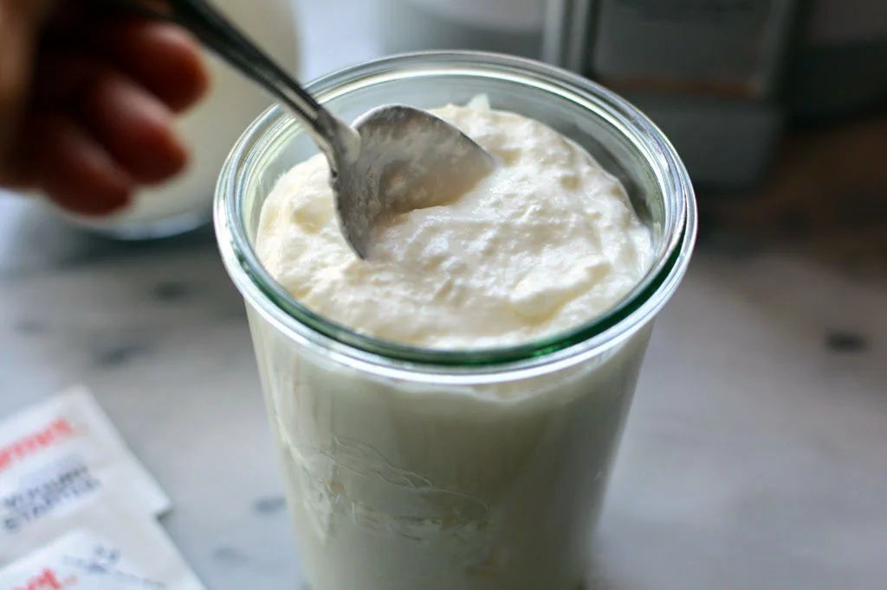

Homemade Greek Yogurt

Using a yogurt machine, you can make delicious yogurt from old yogurt and milk
- Yogurt machine
- Whole milk
- Leftover greek yogurt or starter culture
- Add the yogurt and milk to the machine roughly 3:1
- Turn on the timer and wait
- Let cool to room temperature, then place in the fridge